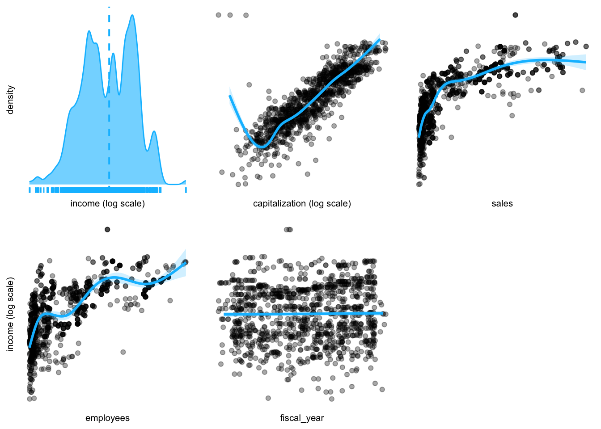
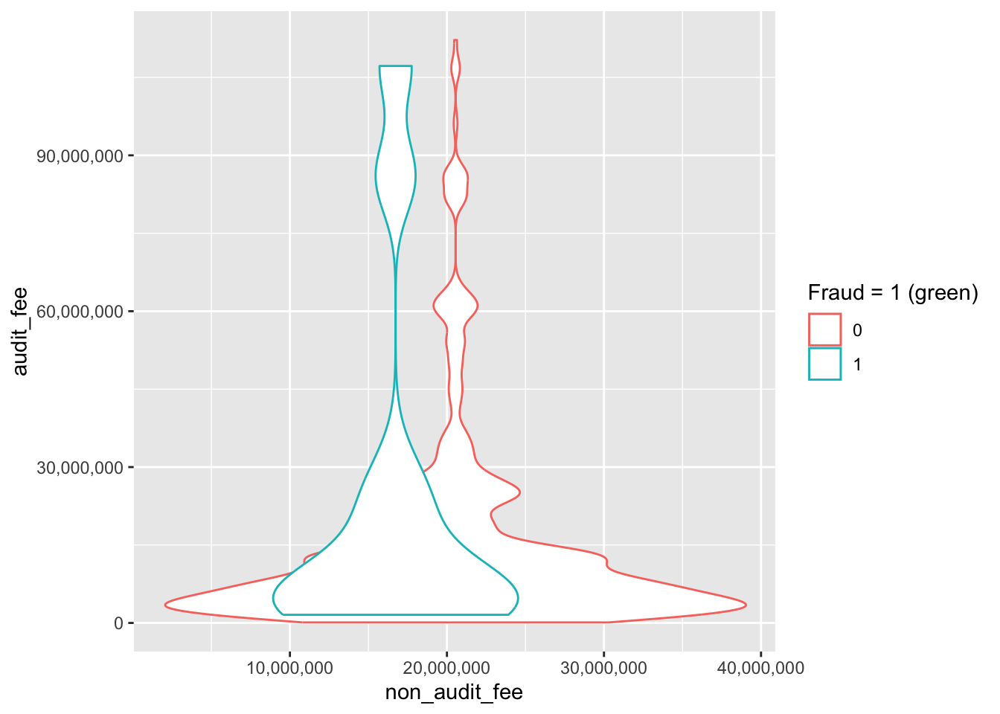
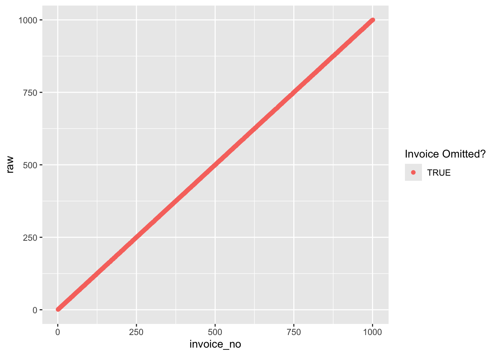
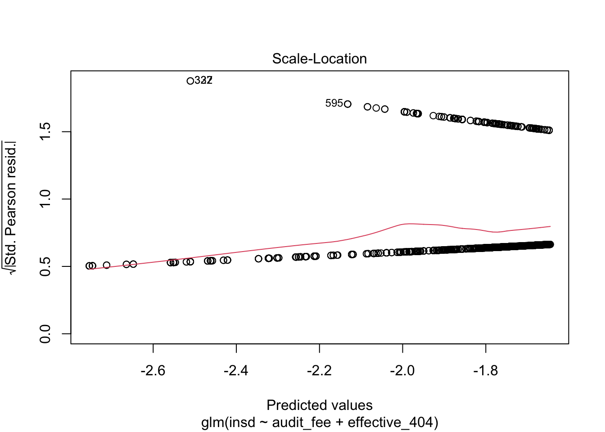

# install.packages("pacman") # first time only
pacman::p_load(devtools)
# devtools::install_github("westland/auditanalytics") # first time only
pacman::p_load(auditanalytics, tidyverse, plotluck, knitr, kableExtra)Chapter 1:
Fundamentals of Auditing Financial Reports
Install R and RStudio
- Install R
- Install RStudio (or VS Code)
- Install Quarto
Chapter 2: Foundations of Audit Analytics
Introduction to R
- Assign a value to a variable with
<-or=. - An object’s name is flexible, but it must begin with a letter and typically follows snake_case.
- like
df_original,my_data,total_asset, etc.
- like
- Use
#for comments. - Use
pacman::p_load()to load packages.
pacman::p_load(tidyverse, ggthemes, knitr)Assigning values
Replace the right-hand side with the left-hand side object x with <- or =.
<-
x <- 3
4 -> y
x[1] 3y[1] 4Example
pipe operator %>% or |>
Use pipes %>% or |> to chain functions together. The pipe operator assigns the left-hand side result to the first argument of the right-hand side function.
A |> function(B)
has same meaning as function(A, B).
Example
Try the following code.
x <- 1:100 # assign 1 to 100 to x
# calculate the sum of x above 50
# nested
sum(subset(x, x > 50))[1] 3775# use standard pipe
x |> subset(x > 50) |> sum()[1] 3775# use magrittr pipe
x %>% subset(x > 50) %>% sum[1] 3775Use packages
We can use packages to add functionality beyond the functions that come with R. Install a package to use it.
install.packages("pacman")read csv data
industry_stats <- readr::read_csv( # read csv file
system.file("extdata", # file path
"ch_2_dataset.csv", # file name
package = "auditanalytics", # package name
mustWork = TRUE # error if file not found
)
)
head(industry_stats) # show the first 3 rows# A tibble: 6 × 6
ticker employees income sales capitalization fiscal_year
<chr> <dbl> <dbl> <dbl> <dbl> <dbl>
1 GE 319 20829 160854 382421 2006
2 GE 319 20829 160854 382421 2006
3 GE 327 22208 169719 370240 2007
4 GE 327 22208 169719 370240 2007
5 GE 316 16711 148559 367474 2005
6 GE 316 16711 148559 367474 2005plotluck packages
plotluck(industry_stats, .~1).~1 shows distribution of each variable in the data frame, separately.
industry_stats |>
dplyr::filter(income >= 0 ) |> # filter data
plotluck(income ~ .) # plot the data
industry_stats |>
dplyr::select(-ticker) |> # tickerを除外
dplyr::filter(income >= 0) |> # 利益が0以上のデータ
plotluck(income ~ .) # 作図industry_stats |>
dplyr::filter(income >= 0) |> # 利益が0以上のデータ
plotluck(income ~ fiscal_year) # income vs fiscal yearsox_stats <- read_csv(　# read csv file
system.file(
"extdata",
"ch_2_data_types.csv", # dataset
package = "auditanalytics",
mustWork = TRUE
)
)
summary(sox_stats) # descriptive stats ticker date card disc
Length:1514 Min. :2005 Length:1514 Min. :0.0000
Class :character 1st Qu.:2007 Class :character 1st Qu.:0.0000
Mode :character Median :2010 Mode :character Median :0.0000
Mean :2010 Mean :0.1739
3rd Qu.:2013 3rd Qu.:0.0000
Max. :2016 Max. :1.0000
NA's :2 NA's :2
hack insd phys port
Min. :0.0000 Min. :0.0000 Min. :0.0000 Min. :0.0000
1st Qu.:0.0000 1st Qu.:0.0000 1st Qu.:0.0000 1st Qu.:0.0000
Median :0.0000 Median :0.0000 Median :0.0000 Median :0.0000
Mean :0.2467 Mean :0.1382 Mean :0.0463 Mean :0.2837
3rd Qu.:0.0000 3rd Qu.:0.0000 3rd Qu.:0.0000 3rd Qu.:1.0000
Max. :1.0000 Max. :1.0000 Max. :1.0000 Max. :1.0000
NA's :2 NA's :2 NA's :2 NA's :2
stat unkn effective_303 mat_weak_303
Min. :0.00000 Min. :0.00000 Min. :0.0000 Min. :0.00000
1st Qu.:0.00000 1st Qu.:0.00000 1st Qu.:1.0000 1st Qu.:0.00000
Median :0.00000 Median :0.00000 Median :1.0000 Median :0.00000
Mean :0.03704 Mean :0.03968 Mean :0.9616 Mean :0.03241
3rd Qu.:0.00000 3rd Qu.:0.00000 3rd Qu.:1.0000 3rd Qu.:0.00000
Max. :1.00000 Max. :1.00000 Max. :1.0000 Max. :1.00000
NA's :2 NA's :2 NA's :2 NA's :2
sig_def_303 auto_1 auditor_agrees_303 effective_404
Min. :0.0000 Min. :0.0000 Min. :0.00000 Min. :0.0000
1st Qu.:0.0000 1st Qu.:0.0000 1st Qu.:0.00000 1st Qu.:0.0000
Median :0.0000 Median :0.0000 Median :0.00000 Median :0.0000
Mean :0.1157 Mean :0.2037 Mean :0.08003 Mean :0.3935
3rd Qu.:0.0000 3rd Qu.:0.0000 3rd Qu.:0.00000 3rd Qu.:1.0000
Max. :1.0000 Max. :1.0000 Max. :1.00000 Max. :1.0000
NA's :2 NA's :2 NA's :2 NA's :2
audit_fee non_audit_fee tax_fees
Min. : 100000 Min. : 0 Min. : 0
1st Qu.: 3785984 1st Qu.: 477686 1st Qu.: 93140
Median : 7956000 Median : 1068000 Median : 370000
Mean : 15321536 Mean : 3679039 Mean : 1451705
3rd Qu.: 17800000 3rd Qu.: 3400000 3rd Qu.: 1311000
Max. :112200000 Max. :41100000 Max. :20800000
NA's :2 NA's :2 NA's :2 make histogram
sox_stats |> # choose the variables
ggplot() + # プラスの直後で改行OK
aes(x = audit_fee) + # 変数を指定
geom_histogram(bins = 20) # „Éí„Çπ„Éà„Ç∞„É©„Ɇ
Categorical Data
sox_stats |>
filter(as.character(ticker) < "AI") |> # data before "AI"
ggplot() +
aes(x = ticker, y = audit_fee) + # 軸の指定
geom_violin() + # violin plot
scale_y_continuous(
trans = "log10", # 常用対数
labels = scales::comma　# comma format
)bank_fin <- read_csv( # CSVファイルを読み込む
system.file(
"extdata",
"ch_2_yahoo_fin.csv", # データセット
package = "auditanalytics",
mustWork = TRUE
)
)
bank_fin |>
filter(change != "ticker") |> # ticker以外
mutate(# データの変換
change = as.numeric(change), # 数値に変換
capitalization = as.numeric( # Bを削除
str_replace(capitalization, "B", "")
)
) |>
pivot_longer( # wide to long
cols = c(price, change, percent_change, volume,
vol_ave, capitalization, pe_ratio),
names_to = "metric", # 変数名
values_to = "value" # 値
) |>
ggplot() + # 作図
aes(x = metric, y = value) + # 軸の指定
geom_boxplot() + # 箱ひげ図
scale_y_continuous(
trans = "log10",
labels = scales::comma
) # 縦軸を対数Binary Data
ggplot(sox_stats) +
aes(x = non_audit_fee, y = audit_fee, col = card) + # 軸と色分け
geom_violin() + # ヴァイオリンプロット
labs(col = "Fraud = 1 (green)") + # 軸ラベル
scale_y_continuous(labels = scales::comma) +
scale_x_continuous(labels = scales::comma)整数に変換 as.integer()
sox_stats$card <- as.integer(sox_stats$card)
sox_stats_long <- sox_stats |>
pivot_longer( # wide to long
cols = c(effective_303, mat_weak_303, sig_def_303,
effective_404, auditor_agrees_303),
names_to = "metric", # 変数名
values_to = "value") # 値
# 作図
ggplot(sox_stats_long) +
aes(x = non_audit_fee, y = audit_fee, col = metric) +
geom_violin() + # バイオリン・プロット
scale_x_continuous(trans = "log2", labels = scales::comma) +
scale_y_continuous(trans = "log2", labels = scales::comma) # 対数軸Make an original function
rdate <- function( # 引数を指定
x,
min = paste0(format(Sys.Date(), "%Y"), "-01-01"),
max = paste0(format(Sys.Date(), "%Y"), "-12-31"),
sort = TRUE
) { # 関数の本体
dates <- sample(
seq(as.Date(min), as.Date(max), by = "day"),
x, replace = TRUE)
if (sort == TRUE) {
return(sort(dates))
} else {
return(dates)
}
}
journal_ent_no <- tibble( # data.frameを作成
date = rdate(1000), # ランダムな日付
invoice_no = seq(1, 1000) + rbinom(1000, 1, 0.1) # 請求書番号
) |>
arrange(date) |> # 日付で並び替え
mutate( # 重複する日付をマーク
invoice_no = if_else(duplicated(invoice_no), NA, invoice_no),
duplicates = duplicated(invoice_no) # duplicates
)
journal_dups <- journal_ent_no |>
mutate(
raw = row_number(), # row number
duplicates = duplicated(invoice_no) # duplicates
)
glimpse(journal_dups)Rows: 1,000
Columns: 4
$ date <date> 2024-01-01, 2024-01-01, 2024-01-01, 2024-01-02, 2024-01-02…
$ invoice_no <int> 2, NA, 3, 4, 5, 6, 7, 8, 9, 10, 11, 12, 14, NA, 15, 16, 18,…
$ duplicates <lgl> FALSE, FALSE, FALSE, FALSE, FALSE, FALSE, FALSE, FALSE, FAL…
$ raw <int> 1, 2, 3, 4, 5, 6, 7, 8, 9, 10, 11, 12, 13, 14, 15, 16, 17, …table(journal_dups$duplicates)
FALSE TRUE
908 92 ggplot(journal_dups) +
aes(x = invoice_no, y = raw,
shape = duplicates, color = duplicates) +
geom_point() # 散布図
journal_ent_no |>
filter(duplicates == TRUE, invoice_no < 100) |>
kable(longtable = T, caption = "Duplicated Invoices") |>
kable_styling(
bootstrap_options = c("striped", "hover", "condensed"),
full_width = F, font_size = 20)| date | invoice_no | duplicates |
|---|---|---|
| NA | NA | NA |
| :---- | ----------: | :---------- |
journal_dups <- journal_dups |>
mutate(
invoice = journal_ent_no$invoice_no,
omit = !raw %in% journal_ent_no$invoice
)
glimpse(journal_dups)Rows: 1,000
Columns: 6
$ date <date> 2024-01-01, 2024-01-01, 2024-01-01, 2024-01-02, 2024-01-02…
$ invoice_no <int> 2, NA, 3, 4, 5, 6, 7, 8, 9, 10, 11, 12, 14, NA, 15, 16, 18,…
$ duplicates <lgl> FALSE, FALSE, FALSE, FALSE, FALSE, FALSE, FALSE, FALSE, FAL…
$ raw <int> 1, 2, 3, 4, 5, 6, 7, 8, 9, 10, 11, 12, 13, 14, 15, 16, 17, …
$ invoice <int> 2, NA, 3, 4, 5, 6, 7, 8, 9, 10, 11, 12, 14, NA, 15, 16, 18,…
$ omit <lgl> TRUE, TRUE, TRUE, TRUE, TRUE, TRUE, TRUE, TRUE, TRUE, TRUE,…ggplot(journal_dups) +
aes(x = invoice_no, y = raw, col = omit) +
geom_point() + labs(col = "Invoice Omitted?")
Big Data
big_data <- read_csv(
system.file(
"extdata",
"ch1_amount_data.csv",
package = "auditanalytics",
mustWork = TRUE
)
) |>
pivot_longer(# wide to long
cols = c(-year),
names_to = "data_type",
values_to = "value"
)
head(big_data)# A tibble: 6 × 3
year data_type value
<dbl> <chr> <dbl>
1 1930 transient 0
2 1930 financial 323436613.
3 1930 text 332755554.
4 1930 multimedia 0
5 1930 mobile 0
6 1932 transient 0 big_data$amount <- sqrt(big_data$value)
big_data %>%
ggplot() + aes(x = year, y = amount, col=data_type) +
geom_point(aes(color = data_type, size = amount), alpha = 0.5) +
scale_size(range = c(0.5, 12)) +
scale_y_continuous(trans = "sqrt") +
xlim(1990,2020) + xlab("Year") +
ylab("Number of Bits of Storage")
Vectors
a <- c(1, 2, 5.3, 6, -2, 4) # number vector
b <- c("one", "two", "three") # character vector
c <- c(TRUE,TRUE,TRUE,FALSE,TRUE,FALSE) # logical vector
a[c(2,4)] # 2nd and 4th elements of the vector[1] 2 6Matrix
sequence of numbers from 1 to 25
vector <- seq(1, 25)
r <- 5
c <- 5
mat <- matrix(vector,
nrow = r, # row
ncol = c, # column
byrow = FALSE # 行と列を入れ替えない
)
print(mat) # 行列を表示 [,1] [,2] [,3] [,4] [,5]
[1,] 1 6 11 16 21
[2,] 2 7 12 17 22
[3,] 3 8 13 18 23
[4,] 4 9 14 19 24
[5,] 5 10 15 20 25Try this code
Indexing
# 5行4列の行列を作成
y <- matrix(1:20, nrow=5,ncol=4)
y [,1] [,2] [,3] [,4]
[1,] 1 6 11 16
[2,] 2 7 12 17
[3,] 3 8 13 18
[4,] 4 9 14 19
[5,] 5 10 15 20# another example
cells <- c(1,26,24,68)
rnames <- c("R1", "R2")
cnames <- c("C1", "C2")
mymatrix <- matrix(cells,
nrow = 2,
ncol = 2,
byrow = TRUE,
dimnames = list(rnames, cnames)
)
mymatrix C1 C2
R1 1 26
R2 24 68mat[, 4] # 4th column of the matrix[1] 16 17 18 19 20mat[3,] # 3rd row of the matrix[1] 3 8 13 18 23mat[2:4,1:3] # rows 2 to 4 and columns 1 to 3 [,1] [,2] [,3]
[1,] 2 7 12
[2,] 3 8 13
[3,] 4 9 14set.seed(123) # set seed for reproducibility
x <- sample(1:20, 9) # 9 random numbers
mat <- matrix(x, nrow = 3, ncol = 3) # 3x3 matrix
print(mat) # print the matrix [,1] [,2] [,3]
[1,] 15 3 6
[2,] 19 10 11
[3,] 14 2 5## Inverse Matrix
solve(mat) [,1] [,2] [,3]
[1,] -1.866667 0.2 1.8
[2,] -3.933333 0.6 3.4
[3,] 6.800000 -0.8 -6.2## Unit Matrix
mat %*% solve(mat) |> round(5) # unit matrix [,1] [,2] [,3]
[1,] 1 0 0
[2,] 0 1 0
[3,] 0 0 1Create a data frame
ID <- c(1, 2, 3, 4) # numeric vector
Color <- c("red", "white", "red", NA)　# character vector
Passed <- c(TRUE, TRUE, TRUE, FALSE) # logical vector
mydata <- data.frame(ID, Color, Passed) # create data frame
# access elements of the data frame
mydata[1:2] # columns 1 and 2 of data frame ID Color
1 1 red
2 2 white
3 3 red
4 4 <NA>mydata[c("ID","Color")] # columns ID and Age from data frame ID Color
1 1 red
2 2 white
3 3 red
4 4 <NA>## Example: Data Frame
mydata <- data.frame(
ID = c(1, 2, 3, 4),
Color = c("red", "white", "red", NA),
Passed = c(TRUE, TRUE, TRUE, FALSE)
)
# mydataからColorを取り出す
mydata["Color"] Color
1 red
2 white
3 red
4 <NA># mydataからIDの3番目の要素を取り出す
mydata[3,"ID"][1] 3List
a <- b <- "seven"
z <- y <- 0
# example of a list with 4 components -
w <- list(name = "Fred", mynumbers = a, mymatrix = y, age = 5.3)
w$name
[1] "Fred"
$mynumbers
[1] "seven"
$mymatrix
[1] 0
$age
[1] 5.3list1 <- list(name = "Fred", mynumbers = a, mymatrix = y, age = 5.3)
list2 <- list(name = "Joe", mynumbers = b, mymatrix = z, age = 10.11) # 誤字
v <- c(list1,list2)
v$name
[1] "Fred"
$mynumbers
[1] "seven"
$mymatrix
[1] 0
$age
[1] 5.3
$name
[1] "Joe"
$mynumbers
[1] "seven"
$mymatrix
[1] 0
$age
[1] 10.11w[[1]] # 1st component of the list[1] "Fred"v[["mynumbers"]] # component named mynumbers in list[1] "seven"## Example: list
mylist <- list(
a <- c("one", "two", "three"),
b <- c(1,2,3),
c <- matrix(1:9, nrow = 3)
)
# mylistからaを取り出す
mylist[1][[1]]
[1] "one" "two" "three"# mylistからbの2番目の要素を取り出す
mylist[[2]][2][1] 2factor
gender <- c(rep("male", 20), rep("female", 30))
gender <- factor(gender)　# ファクター型に変換
gender [1] male male male male male male male male male male
[11] male male male male male male male male male male
[21] female female female female female female female female female female
[31] female female female female female female female female female female
[41] female female female female female female female female female female
Levels: female malesummary(gender)female male
30 20 rating <- c("medium", "large", "small") # 文字ベクトル
rating <- ordered(rating, levels = c("small", "medium", "large"))
rating[1] medium large small
Levels: small < medium < largearry <- read_csv( #
system.file(
"extdata",
"morph_array.csv", #
package = "auditanalytics",
mustWork = TRUE
)
)
head(arry)# A tibble: 5 × 11
scope ben_1 cost_1 ben_2 cost_2 ben_3 cost_3 ben_4 cost_4 ben_5 cost_5
<dbl> <dbl> <dbl> <dbl> <dbl> <dbl> <dbl> <dbl> <dbl> <dbl> <dbl>
1 1 810 500 940 440 140 130 190 170 20 10
2 2 1370 890 1610 1010 3970 2770 3430 2460 3020 2650
3 3 9070 4850 6190 3250 5710 3590 7650 5360 7970 5220
4 4 4720 2400 4650 3950 330 260 2120 1580 2600 2020
5 5 8650 4830 9100 4060 5090 3480 8400 7540 5930 4610arry |>
kable(longtable = T) |>
kable_styling( # specify table style
bootstrap_options = c("striped", "hover", "condensed"),
full_width = F, font_size = 18
)| scope | ben_1 | cost_1 | ben_2 | cost_2 | ben_3 | cost_3 | ben_4 | cost_4 | ben_5 | cost_5 |
|---|---|---|---|---|---|---|---|---|---|---|
| 1 | 810 | 500 | 940 | 440 | 140 | 130 | 190 | 170 | 20 | 10 |
| 2 | 1370 | 890 | 1610 | 1010 | 3970 | 2770 | 3430 | 2460 | 3020 | 2650 |
| 3 | 9070 | 4850 | 6190 | 3250 | 5710 | 3590 | 7650 | 5360 | 7970 | 5220 |
| 4 | 4720 | 2400 | 4650 | 3950 | 330 | 260 | 2120 | 1580 | 2600 | 2020 |
| 5 | 8650 | 4830 | 9100 | 4060 | 5090 | 3480 | 8400 | 7540 | 5930 | 4610 |
length(arry) # 要素・コンポーネントの数[1] 11class(arry) # オブジェクトのクラス・型[1] "spec_tbl_df" "tbl_df" "tbl" "data.frame" names(arry) # オブジェクトの変数名 [1] "scope" "ben_1" "cost_1" "ben_2" "cost_2" "ben_3" "cost_3" "ben_4"
[9] "cost_4" "ben_5" "cost_5"Chapter 3. Analysis of Accounting Transactions
lubridate packages
pacman::p_load(auditanalytics, tidyverse)lubridate is a package that makes it easier to work with dates and times in R.
ymd(20101215) # year month day[1] "2010-12-15"mdy("4/1/17") # month day year[1] "2017-04-01"bday <- dmy("14/10/1979")
month(bday) # 月を取得[1] 10wday(bday, label = TRUE) # 1979年10月14日は日曜日[1] 日
Levels: 日 < 月 < 火 < 水 < 木 < 金 < 土year(bday) <- 2016
wday(bday, label = TRUE) # 2016年10月14日は金曜日[1] 金
Levels: 日 < 月 < 火 < 水 < 木 < 金 < 土Accounting Transactions for Auditors
price <- rpois(n = 1000, lambda = 2) # ポワソン分布から1000個の乱数を生成
price |> head()[1] 5 2 3 2 0 4quantity <- rpois(1000, 10000) # ポワソン分布から1000個の乱数を生成
quantity |> head()[1] 9990 10001 10075 10036 9941 10021value <- price * quantity # 価格と数量の積
qplot(value, geom = "histogram") # ヒストグラムqplot(value, geom = "density") # 密度分布disburse <- read_csv(system.file( # csvファイルの読み込み
"extdata",
"ch_2_AP_disbursements_journal.csv", # ファイル名
package = "auditanalytics",
mustWork = TRUE
)
) # ファイルがない場合はエラーを返す
summary(disburse) # descriptive statistics disbursement_no date amount_paid
Length:50 Min. :2018-03-21 Min. :2417
Class :character 1st Qu.:2018-06-27 1st Qu.:2537
Mode :character Median :2018-10-12 Median :2618
Mean :2018-10-07 Mean :2686
3rd Qu.:2018-12-24 3rd Qu.:2800
Max. :2019-06-20 Max. :3190 # output the total amount paid
cat('\n\n 支払帳の合計金額 = ', sum(disburse$amount_paid))
支払帳の合計金額 = 134313.5library(Hmisc) # 記述統計量の計算
bank_fin <- read.csv(system.file(
"extdata",
"ch_2_yahoo_fin.csv",
package = "auditanalytics",
mustWork = TRUE
)
)
Hmisc::describe(bank_fin) # Show summary statisticsbank_fin
9 Variables 38 Observations
--------------------------------------------------------------------------------
ticker
n missing distinct
25 13 25
lowest : BAC-PC BAC-PE BAC-PK BAC-PL BAC-PY, highest: WFC-PR WFC-PV WFC-PW WFC-PX WFC-PY
--------------------------------------------------------------------------------
name
n missing distinct
25 13 7
lowest : Banco Santander, S.A. GTD PFD SECS 6 Bank of America Corporation Berkshire Hathaway Inc. HSBC Holdings plc ADR A 1/40PF A JPMorgan Chase & Co.
highest: Berkshire Hathaway Inc. HSBC Holdings plc ADR A 1/40PF A JPMorgan Chase & Co. Visa Inc. Wells Fargo & Company
--------------------------------------------------------------------------------
price
n missing distinct Info Mean Gmd .05 .10
25 13 25 1 12231 24374 22.38 22.93
.25 .50 .75 .90 .95
25.70 26.45 28.66 935.15 1437.69
Value 0e+00 3e+05
Frequency 24 1
Proportion 0.96 0.04
For the frequency table, variable is rounded to the nearest 5000
--------------------------------------------------------------------------------
change
n missing distinct
26 12 22
lowest : -0.01 -0.03 -0.04 -0.06 -0.07
highest: 0.14 1.10 1.92 2631.00 ticker
--------------------------------------------------------------------------------
percent_change
n missing distinct Info Mean Gmd .05 .10
25 13 23 0.999 0.2016 0.4513 -0.268 -0.252
.25 .50 .75 .90 .95
-0.110 0.180 0.410 0.740 0.952
lowest : -0.48 -0.27 -0.26 -0.24 -0.19, highest: 0.44 0.53 0.88 0.97 1.02
--------------------------------------------------------------------------------
volume
n missing distinct Info Mean Gmd .05 .10
25 13 25 1 520349 939507 4340 5020
.25 .50 .75 .90 .95
20982 34142 80933 1267169 3278800
lowest : 243 4284 4566 5700 11997
highest: 89764 140922 2018000 3594000 6506000
--------------------------------------------------------------------------------
vol_ave
n missing distinct Info Mean Gmd .05 .10
25 13 25 1 935629 1706024 6093 7569
.25 .50 .75 .90 .95
29831 44849 85711 2347830 6281000
Value 0 100000 3700000 6900000 11400000
Frequency 19 3 1 1 1
Proportion 0.76 0.12 0.04 0.04 0.04
For the frequency table, variable is rounded to the nearest 100000
--------------------------------------------------------------------------------
capitalization
n missing distinct
25 13 25
lowest : 211.288B 212.921B 214.807B 215.543B 216.366B
highest: 368.674B 403.496B 492.962B 493.498B 541.154B
--------------------------------------------------------------------------------
pe_ratio
n missing distinct Info Mean Gmd .05 .10
25 13 25 1 43.2 71.1 2.846 3.834
.25 .50 .75 .90 .95
5.440 7.430 11.120 53.596 249.240
Value 0 5 10 15 30 45 55 295 505
Frequency 3 15 1 1 1 1 1 1 1
Proportion 0.12 0.60 0.04 0.04 0.04 0.04 0.04 0.04 0.04
For the frequency table, variable is rounded to the nearest 5
--------------------------------------------------------------------------------library(psych) # 心理統計学のためのパッケージ
psych::describe(bank_fin) # 記述統計量の出力 vars n mean sd median trimmed mad min
ticker* 1 38 9.55 8.61 7.50 8.91 9.64 1.00
name* 2 38 4.05 2.89 3.00 3.97 2.97 1.00
price 3 25 12231.23 60356.40 26.45 112.41 1.93 20.88
change* 4 38 8.84 7.52 7.50 8.34 9.64 1.00
percent_change 5 25 0.20 0.39 0.18 0.18 0.37 -0.48
volume 6 25 520348.92 1480580.79 34142.00 138295.05 32832.18 243.00
vol_ave 7 25 935628.64 2678595.35 44849.00 237653.14 45797.51 245.00
capitalization* 8 38 9.55 8.61 7.50 8.91 9.64 1.00
pe_ratio 9 25 43.20 113.07 7.43 12.99 3.16 0.01
max range skew kurtosis se
ticker* 26.00 25.00 0.47 -1.30 1.40
name* 8.00 7.00 0.30 -1.61 0.47
price 301936.00 301915.12 4.42 18.23 12071.28
change* 23.00 22.00 0.37 -1.40 1.22
percent_change 1.02 1.50 0.41 -0.63 0.08
volume 6506000.00 6505757.00 3.01 8.48 296116.16
vol_ave 11488000.00 11487755.00 2.90 7.68 535719.07
capitalization* 26.00 25.00 0.47 -1.30 1.40
pe_ratio 506.93 506.92 3.19 9.35 22.61psych::describeBy(bank_fin, bank_fin$name)
Descriptive statistics by group
group:
vars n mean sd median trimmed mad min max range skew kurtosis
ticker 1 13 1.00 0.0 1 1 0 1 1 0 NaN NaN
name 2 13 1.00 0.0 1 1 0 1 1 0 NaN NaN
price 3 0 NaN NA NA NaN NA Inf -Inf -Inf NA NA
change 4 13 2.69 6.1 1 1 0 1 23 22 2.82 6.44
percent_change 5 0 NaN NA NA NaN NA Inf -Inf -Inf NA NA
volume 6 0 NaN NA NA NaN NA Inf -Inf -Inf NA NA
vol_ave 7 0 NaN NA NA NaN NA Inf -Inf -Inf NA NA
capitalization 8 13 1.00 0.0 1 1 0 1 1 0 NaN NaN
pe_ratio 9 0 NaN NA NA NaN NA Inf -Inf -Inf NA NA
se
ticker 0.00
name 0.00
price NA
change 1.69
percent_change NA
volume NA
vol_ave NA
capitalization 0.00
pe_ratio NA
------------------------------------------------------------
group: Banco Santander, S.A. GTD PFD SECS 6
vars n mean sd median trimmed mad min max range
ticker 1 1 15.00 NA 15.00 15.00 0 15.00 15.00 0
name 2 1 2.00 NA 2.00 2.00 0 2.00 2.00 0
price 3 1 22.72 NA 22.72 22.72 0 22.72 22.72 0
change 4 1 12.00 NA 12.00 12.00 0 12.00 12.00 0
percent_change 5 1 0.18 NA 0.18 0.18 0 0.18 0.18 0
volume 6 1 11997.00 NA 11997.00 11997.00 0 11997.00 11997.00 0
vol_ave 7 1 19388.00 NA 19388.00 19388.00 0 19388.00 19388.00 0
capitalization 8 1 20.00 NA 20.00 20.00 0 20.00 20.00 0
pe_ratio 9 1 49.93 NA 49.93 49.93 0 49.93 49.93 0
skew kurtosis se
ticker NA NA NA
name NA NA NA
price NA NA NA
change NA NA NA
percent_change NA NA NA
volume NA NA NA
vol_ave NA NA NA
capitalization NA NA NA
pe_ratio NA NA NA
------------------------------------------------------------
group: Bank of America Corporation
vars n mean sd median trimmed mad min
ticker 1 7 5.00 2.16 5.00 5.00 2.97 2.00
name 2 7 3.00 0.00 3.00 3.00 0.00 3.00
price 3 7 224.31 529.23 25.78 224.31 3.77 20.88
change 4 7 6.43 4.31 5.00 6.43 2.97 3.00
percent_change 5 7 -0.11 0.24 -0.19 -0.11 0.12 -0.27
volume 6 7 33409.00 29580.81 32345.00 33409.00 32341.44 4566.00
vol_ave 7 7 41777.29 34055.28 29831.00 41777.29 35695.08 5755.00
capitalization 8 7 15.00 2.16 15.00 15.00 2.97 12.00
pe_ratio 9 7 79.83 188.34 9.17 79.83 1.33 7.43
max range skew kurtosis se
ticker 8.00 6.00 0.00 -1.71 0.82
name 3.00 0.00 NaN NaN 0.00
price 1424.47 1403.59 1.62 0.80 200.03
change 15.00 12.00 0.98 -0.63 1.63
percent_change 0.41 0.68 1.37 0.28 0.09
volume 86124.00 81558.00 0.56 -1.25 11180.50
vol_ave 85711.00 79956.00 0.18 -2.02 12871.69
capitalization 18.00 6.00 0.00 -1.71 0.82
pe_ratio 506.93 499.50 1.62 0.80 71.18
------------------------------------------------------------
group: Berkshire Hathaway Inc.
vars n mean sd median trimmed mad
ticker 1 2 9.50 0.71 9.50 9.50 0.74
name 2 2 4.00 0.00 4.00 4.00 0.00
price 3 2 151068.58 213358.75 151068.58 151068.58 223676.04
change 4 2 21.50 0.71 21.50 21.50 0.74
percent_change 5 2 0.92 0.06 0.92 0.92 0.07
volume 6 2 1009121.50 1426769.66 1009121.50 1009121.50 1495763.26
vol_ave 7 2 1890622.50 2673397.50 1890622.50 1890622.50 2802673.68
capitalization 8 2 24.50 0.71 24.50 24.50 0.74
pe_ratio 9 2 8.57 12.11 8.57 8.57 12.70
min max range skew kurtosis se
ticker 9.00 10.00 1.00 0 -2.75 0.50
name 4.00 4.00 0.00 NaN NaN 0.00
price 201.16 301936.00 301734.84 0 -2.75 150867.42
change 21.00 22.00 1.00 0 -2.75 0.50
percent_change 0.88 0.97 0.09 0 -2.75 0.04
volume 243.00 2018000.00 2017757.00 0 -2.75 1008878.50
vol_ave 245.00 3781000.00 3780755.00 0 -2.75 1890377.50
capitalization 24.00 25.00 1.00 0 -2.75 0.50
pe_ratio 0.01 17.14 17.13 0 -2.75 8.56
------------------------------------------------------------
group: HSBC Holdings plc ADR A 1/40PF A
vars n mean sd median trimmed mad min max range
ticker 1 1 11.00 NA 11.00 11.00 0 11.00 11.00 0
name 2 1 5.00 NA 5.00 5.00 0 5.00 5.00 0
price 3 1 26.45 NA 26.45 26.45 0 26.45 26.45 0
change 4 1 10.00 NA 10.00 10.00 0 10.00 10.00 0
percent_change 5 1 0.00 NA 0.00 0.00 0 0.00 0.00 0
volume 6 1 26376.00 NA 26376.00 26376.00 0 26376.00 26376.00 0
vol_ave 7 1 61496.00 NA 61496.00 61496.00 0 61496.00 61496.00 0
capitalization 8 1 26.00 NA 26.00 26.00 0 26.00 26.00 0
pe_ratio 9 1 56.04 NA 56.04 56.04 0 56.04 56.04 0
skew kurtosis se
ticker NA NA NA
name NA NA NA
price NA NA NA
change NA NA NA
percent_change NA NA NA
volume NA NA NA
vol_ave NA NA NA
capitalization NA NA NA
pe_ratio NA NA NA
------------------------------------------------------------
group: JPMorgan Chase & Co.
vars n mean sd median trimmed mad
ticker 1 3 13.00 1.00 13.00 13.00 1.48
name 2 3 6.00 0.00 6.00 6.00 0.00
price 3 3 54.84 46.66 28.05 54.84 0.44
change 4 3 12.67 9.45 16.00 12.67 5.93
percent_change 5 3 0.45 0.54 0.36 0.45 0.59
volume 6 3 2225376.33 3707131.82 89764.00 2225376.33 13934.96
vol_ave 7 3 3941765.67 6535296.89 198076.00 3941765.67 87258.42
capitalization 8 3 20.67 1.53 21.00 20.67 1.48
pe_ratio 9 3 5.61 4.77 2.87 5.61 0.04
min max range skew kurtosis se
ticker 12.00 1.4000e+01 2.00 0.00 -2.33 0.58
name 6.00 6.0000e+00 0.00 NaN NaN 0.00
price 27.75 1.0871e+02 80.96 0.38 -2.33 26.94
change 2.00 2.0000e+01 18.00 -0.31 -2.33 5.46
percent_change -0.04 1.0200e+00 1.06 0.16 -2.33 0.31
volume 80365.00 6.5060e+06 6425635.00 0.38 -2.33 2140313.55
vol_ave 139221.00 1.1488e+07 11348779.00 0.38 -2.33 3773155.42
capitalization 19.00 2.2000e+01 3.00 -0.21 -2.33 0.88
pe_ratio 2.84 1.1120e+01 8.28 0.38 -2.33 2.76
------------------------------------------------------------
group: Visa Inc.
vars n mean sd median trimmed mad min
ticker 1 1 16.00 NA 16.00 16.00 0 16.00
name 2 1 7.00 NA 7.00 7.00 0 7.00
price 3 1 180.07 NA 180.07 180.07 0 180.07
change 4 1 7.00 NA 7.00 7.00 0 7.00
percent_change 5 1 -0.48 NA -0.48 -0.48 0 -0.48
volume 6 1 3594000.00 NA 3594000.00 3594000.00 0 3594000.00
vol_ave 7 1 6906000.00 NA 6906000.00 6906000.00 0 6906000.00
capitalization 8 1 23.00 NA 23.00 23.00 0 23.00
pe_ratio 9 1 34.58 NA 34.58 34.58 0 34.58
max range skew kurtosis se
ticker 16.00 0 NA NA NA
name 7.00 0 NA NA NA
price 180.07 0 NA NA NA
change 7.00 0 NA NA NA
percent_change -0.48 0 NA NA NA
volume 3594000.00 0 NA NA NA
vol_ave 6906000.00 0 NA NA NA
capitalization 23.00 0 NA NA NA
pe_ratio 34.58 0 NA NA NA
------------------------------------------------------------
group: Wells Fargo & Company
vars n mean sd median trimmed mad min
ticker 1 10 21.50 3.03 21.50 21.50 3.71 17.00
name 2 10 8.00 0.00 8.00 8.00 0.00 8.00
price 3 10 167.96 447.30 26.42 26.63 0.90 25.58
change 4 10 14.60 3.57 15.50 14.88 3.71 8.00
percent_change 5 10 0.29 0.19 0.36 0.31 0.15 -0.07
volume 6 10 44811.50 39786.63 32546.00 37863.62 16703.71 4284.00
vol_ave 7 10 50484.90 35897.76 39847.00 44781.88 14567.29 7758.00
capitalization 8 10 6.50 3.03 6.50 6.50 3.71 2.00
pe_ratio 9 10 34.68 92.36 5.46 5.50 0.19 5.28
max range skew kurtosis se
ticker 26.00 9.00 0.00 -1.56 0.96
name 8.00 0.00 NaN NaN 0.00
price 1441.00 1415.42 2.28 3.57 141.45
change 19.00 11.00 -0.42 -1.31 1.13
percent_change 0.53 0.60 -0.56 -1.13 0.06
volume 140922.00 136638.00 1.31 0.62 12581.64
vol_ave 138836.00 131078.00 1.31 0.92 11351.87
capitalization 11.00 9.00 0.00 -1.56 0.96
pe_ratio 297.54 292.26 2.28 3.57 29.21pacman::p_load(kableExtra, broom, pastecs) # パッケージの読み込み
## Tidy these up and write them as a formated table, using kableExtra
pastecs::stat.desc(bank_fin) |> # 記述統計量の計算
broom::tidy() |> # データフレームに変換
kable(longtable = T, caption = "Summary Statistics") |>
kable_styling(full_width = F, font_size = 18)| column | n | mean | sd | median | trimmed | mad | min | max | range | skew | kurtosis | se |
|---|---|---|---|---|---|---|---|---|---|---|---|---|
| ticker | 0 | NaN | NA | NA | NaN | NA | Inf | -Inf | -Inf | NA | NA | NA |
| name | 0 | NaN | NA | NA | NaN | NA | Inf | -Inf | -Inf | NA | NA | NA |
| price | 14 | 2.602796e+08 | 9.735837e+08 | 1.215125e+04 | 8.494124e+04 | 1.214879e+04 | 0.00 | 3.642895e+09 | 3.642895e+09 | 3.328201 | 12.076923 | 2.602012e+08 |
| change | 0 | NaN | NA | NA | NaN | NA | Inf | -Inf | -Inf | NA | NA | NA |
| percent_change | 14 | 3.515023e+00 | 7.098547e+00 | 6.972503e-01 | 2.057527e+00 | 5.799849e-01 | -0.48 | 2.500000e+01 | 2.548000e+01 | 2.331536 | 7.251627 | 1.897167e+00 |
| volume | 14 | 1.565820e+11 | 5.858680e+11 | 4.082325e+05 | 2.413592e+06 | 4.082246e+05 | 0.00 | 2.192119e+12 | 2.192119e+12 | 3.328201 | 12.076923 | 1.565798e+11 |
| vol_ave | 14 | 5.124946e+11 | 1.917564e+12 | 7.356739e+05 | 4.305602e+06 | 7.356659e+05 | 0.00 | 7.174873e+12 | 7.174873e+12 | 3.328201 | 12.076923 | 5.124906e+11 |
| capitalization | 0 | NaN | NA | NA | NaN | NA | Inf | -Inf | -Inf | NA | NA | NA |
| pe_ratio | 14 | 1.082288e+03 | 3.382558e+03 | 3.410240e+01 | 1.972988e+02 | 3.278888e+01 | 0.00 | 1.278445e+04 | 1.278445e+04 | 3.280235 | 11.874574 | 9.040266e+02 |
QQ-Plot
disburse <- readr::read_csv(system.file(
"extdata",
"ch_2_AP_disbursements_journal.csv", # csv file
package = "auditanalytics",
mustWork = TRUE
)
)
head(disburse)# A tibble: 6 × 3
disbursement_no date amount_paid
<chr> <date> <dbl>
1 dis00001 2018-03-21 2883.
2 dis00002 2018-04-11 2598.
3 dis00003 2018-04-18 3138.
4 dis00004 2018-04-22 2518.
5 dis00005 2018-04-26 2520.
6 dis00006 2018-05-16 2843.d <- as.numeric(as.character(disburse$amount_paid))
head(d)[1] 2882.88 2597.91 3137.78 2518.08 2519.91 2842.84class(d)[1] "numeric"qqnorm(d,
main = "Normal Q-Q Plot", # QQプロットを作成
xlab = "Theoretical Quantiles", # x軸のラベル
ylab = "Sample Quantiles", # y軸のラベル
plot.it = TRUE) # プロットするかどうかDensity and Cumulative Distribution
d <- density(disburse$amount_paid) # density of amount paid
plot(d, main = "Density of Amount Paid") # plot density
polygon(d, col="violet", border="black") # add colorplot(
ecdf(disburse$amount_paid), # 累積分布関数を計算
main = "Cumulative Density of Amount Paid" # 図のタイトル
) # 誤植 ~いらないecdf() is a function that computes the empirical cumulative distribution function of a dataset.
lr <- read_csv(system.file(
"extdata",
"ch_2_data_types.csv",
package = "auditanalytics",
mustWork = TRUE
)
)
lgt <- glm( # general linear method
formula = insd ~ audit_fee + effective_404, # 回帰モデル
family = "binomial", # link function
data = lr) # data frame
summary(lgt) # 結果の表示
Call:
glm(formula = insd ~ audit_fee + effective_404, family = "binomial",
data = lr)
Coefficients:
Estimate Std. Error z value Pr(>|z|)
(Intercept) -1.732e+00 1.128e-01 -15.354 <2e-16 ***
audit_fee -9.530e-09 4.496e-09 -2.120 0.034 *
effective_404 8.928e-02 1.518e-01 0.588 0.557
---
Signif. codes: 0 '***' 0.001 '**' 0.01 '*' 0.05 '.' 0.1 ' ' 1
(Dispersion parameter for binomial family taken to be 1)
Null deviance: 1214.8 on 1511 degrees of freedom
Residual deviance: 1209.4 on 1509 degrees of freedom
(2 個の観測値が欠損のため削除されました)
AIC: 1215.4
Number of Fisher Scoring iterations: 4plot(lgt) # Âõ≥„ÅƉΩúÊàê
keras
# install.packages("keras") # install keras packages
library(keras)
# install_keras() # Run this only once. Installation takes time.
mnist <- dataset_mnist() # MNISTデータを読み込む
class(mnist) # List class[1] "list"glimpse(mnist) # See the structure of the dataList of 2
$ train:List of 2
..$ x: int [1:60000, 1:28, 1:28] 0 0 0 0 0 0 0 0 0 0 ...
..$ y: int [1:60000(1d)] 5 0 4 1 9 2 1 3 1 4 ...
$ test :List of 2
..$ x: int [1:10000, 1:28, 1:28] 0 0 0 0 0 0 0 0 0 0 ...
..$ y: int [1:10000(1d)] 7 2 1 0 4 1 4 9 5 9 ...The MNIST database was constructed from NIST’s Special Database 3 and Special Database 1 which contain binary images of handwritten digits.
train_images <- mnist$train$x # image data for training
train_labels <- mnist$train$y # label data for training
test_images <- mnist$test$x # test image data
test_labels <- mnist$test$y # test label data
network <- keras_model_sequential() # null model
network |>
# 28*28 pixel images are flattened into 784 pixel vectors
layer_dense(units = 512, input_shape = c(28 * 28)) |>
# ReLU activation function converts negative values to zero
layer_activation('relu') |> # ReLU activation function
layer_dense(units = 10) |> # 10 output layers 1:10
# softmax activation function convert the output to a probability distribution
layer_activation("softmax") # softmax activation function
network |> compile( # モデルをコンパイル
optimizer = "rmsprop", # 最適化アルゴリズム
loss = "categorical_crossentropy", # 損失関数
metrics = c("accuracy") # 評価関数
)
# Training data
train_images <- array_reshape( # 行列に変換
train_images, # 訓練用画像データ
c(60000, 28 * 28) # 画像の形状
)
# Test data
test_images <- array_reshape( # 行列に変換
test_images, # テスト用画像データ
c(10000, 28 * 28) # 画像の形状
)
# 0が黒，255が白のデータを0-1の範囲に正規化
train_images <- train_images / 255
test_images <- test_images / 255
train_labels <- to_categorical(train_labels) #
test_labels <- to_categorical(test_labels) #
history <- network |>
fit( # training the model
train_images, # training image data
train_labels, # training label data
epochs = 10, # the number of times the model will be trained
batch_size = 128 # the number of samples per gradient update
)Epoch 1/10
469/469 - 1s - loss: 0.2595 - accuracy: 0.9253 - 957ms/epoch - 2ms/step
Epoch 2/10
469/469 - 1s - loss: 0.1038 - accuracy: 0.9690 - 787ms/epoch - 2ms/step
Epoch 3/10
469/469 - 1s - loss: 0.0676 - accuracy: 0.9801 - 786ms/epoch - 2ms/step
Epoch 4/10
469/469 - 1s - loss: 0.0481 - accuracy: 0.9858 - 789ms/epoch - 2ms/step
Epoch 5/10
469/469 - 1s - loss: 0.0367 - accuracy: 0.9888 - 786ms/epoch - 2ms/step
Epoch 6/10
469/469 - 1s - loss: 0.0276 - accuracy: 0.9920 - 780ms/epoch - 2ms/step
Epoch 7/10
469/469 - 1s - loss: 0.0212 - accuracy: 0.9938 - 784ms/epoch - 2ms/step
Epoch 8/10
469/469 - 1s - loss: 0.0163 - accuracy: 0.9952 - 793ms/epoch - 2ms/step
Epoch 9/10
469/469 - 1s - loss: 0.0123 - accuracy: 0.9964 - 777ms/epoch - 2ms/step
Epoch 10/10
469/469 - 1s - loss: 0.0100 - accuracy: 0.9972 - 779ms/epoch - 2ms/stepplot(history) # 訓練の履歴をプロット
metrics <- network |>
evaluate(test_images, test_labels, verbose = 0)
metrics |> kable()| x | |
|---|---|
| loss | 0.0678907 |
| accuracy | 0.9826000 |
Chapter 4. Risk Assessment and Audit Planning
Auditing
pacman::p_load(finstr, XBRL, xbrlus, pander, knitr, kableExtra)
old_o <- options(stringsAsFactors = FALSE) # 文字列をファクターとして扱わない
xbrl_data_2016 <- xbrlDoAll("XBRL/gm-20161231.xml")
xbrl_data_2017 <- xbrlDoAll("XBRL/gm-20171231.xml")
options(old_o) # 文字列をファクターとして扱う
st2016 <- xbrl_get_statements(xbrl_data_2016)
st2017 <- xbrl_get_statements(xbrl_data_2017)
print(st2017) # 2017年度の財務諸表Financial statements repository
From To Rows Columns
ConsolidatedBalanceSheets 2016-12-31 2017-12-31 2 44
ConsolidatedIncomeStatements 2015-12-31 2017-12-31 3 29
ConsolidatedStatementsOfCashFlows 2015-12-31 2017-12-31 3 42
ConsolidatedStatementsOfComprehensiveIncome 2015-12-31 2017-12-31 3 11# 連結貸借対照表を取得
balance_sheet2017 <- st2017$ConsolidatedBalanceSheets
balance_sheet2016 <- st2016$ConsolidatedBalanceSheets
# 連結損益計算書
income2017 <- st2017$ConsolidatedIncomeStatements
income2016 <- st2016$ConsolidatedIncomeStatements
## 貸借対照表を出力
capture.output(
bs_table <- print( # 出力
balance_sheet2017, # オブジェクト名
html = FALSE, # html出力しない
big.mark = ",", # 3桁区切りにカンマを使用
dateFormat = "%Y"), # 日付のフォーマット
file= "NUL") # 出力先をNULにする
bs_table |>
head(10) |> # 先頭10行を表示
kable(
longtable = T, # ページまたぎ
caption = "Balance Sheet", # タイトル
booktabs = T
) |>
kable_styling(
bootstrap_options = c("striped", "hover", "condensed"),
full_width = F,
font_siz = 18
)| Element | 2017-12-31 | 2016-12-31 |
|---|---|---|
| Assets = | 212482 | 221690 |
| + AssetsCurrent = | 68744 | 76203 |
| + CashAndCashEquivalentsAtCarryingValue | 15512 | 12574 |
| + MarketableSecuritiesCurrent | 8313 | 11841 |
| + AccountsNotesAndLoansReceivableNetCurrent | 8164 | 8700 |
| + InventoryNet | 10663 | 11040 |
| + gm_AssetsSubjecttoorAvailableforOperatingLeaseNetCurrent | 1106 | 1110 |
| + OtherAssetsCurrent | 4465 | 3633 |
| + AssetsOfDisposalGroupIncludingDiscontinuedOperationCurrent | 0 | 11178 |
| + NotesAndLoansReceivableNetCurrent | 0 | 0 |
balance_sheet <- balance_sheet2017 |> merge(balance_sheet2016)
capture.output(
bs_table <- print(
balance_sheet,
html = FALSE,
big.mark = ",",
dateFormat = "%Y"
),
file = "NUL"
)
bs_table |>
head(10) |>
kable(
longtable = T,
caption="Merged Balance Sheet",
# "latex",
booktabs = T) |>
kable_styling(
bootstrap_options = c("striped", "hover", "condensed"),
full_width = F,
font_size = 18
)| Element | 2017-12-31 | 2016-12-31 | 2015-12-31 |
|---|---|---|---|
| Assets = | 212482 | 221690 | 194338 |
| + AssetsCurrent = | 68744 | 76203 | 69408 |
| + CashAndCashEquivalentsAtCarryingValue | 15512 | 12960 | 15238 |
| + MarketableSecuritiesCurrent | 8313 | 11841 | 8163 |
| + AccountsNotesAndLoansReceivableNetCurrent | 8164 | 9638 | 8337 |
| + InventoryNet | 10663 | 13788 | 13764 |
| + gm_AssetsSubjecttoorAvailableforOperatingLeaseNetCurrent | 1106 | 1896 | 2783 |
| + OtherAssetsCurrent | 4465 | 4015 | 3072 |
| + AssetsOfDisposalGroupIncludingDiscontinuedOperationCurrent | 0 | 0 | 0 |
| + NotesAndLoansReceivableNetCurrent | 0 | 0 | 0 |
check <- check_statement(balance_sheet2017)
checkNumber of errors: 8
Number of elements in errors: 4
Element: AssetsCurrent = + CashAndCashEquivalentsAtCarryingValue + MarketableSecuritiesCurrent + AccountsNotesAndLoansReceivableNetCurrent + InventoryNet + gm_AssetsSubjecttoorAvailableforOperatingLeaseNetCurrent + OtherAssetsCurrent + AssetsOfDisposalGroupIncludingDiscontinuedOperationCurrent + NotesAndLoansReceivableNetCurrent
date original calculated error
3 2016-12-31 7.6203e+10 6.0076e+10 1.6127e+10
4 2017-12-31 6.8744e+10 4.8223e+10 2.0521e+10
Element: AssetsNoncurrent = + EquityMethodInvestments + PropertyPlantAndEquipmentNet + IntangibleAssetsNetIncludingGoodwill + DeferredIncomeTaxAssetsNet + OtherAssetsNoncurrent + DisposalGroupIncludingDiscontinuedOperationAssetsNoncurrent + NotesAndLoansReceivableNetNoncurrent + PropertySubjectToOrAvailableForOperatingLeaseNet
date original calculated error
5 2016-12-31 1.45487e+11 1.28486e+11 1.7001e+10
6 2017-12-31 1.43738e+11 1.22530e+11 2.1208e+10
Element: LiabilitiesCurrent = + AccountsPayableCurrent + AccruedLiabilitiesCurrent + LiabilitiesOfDisposalGroupIncludingDiscontinuedOperationCurrent + DebtCurrent
date original calculated error
11 2016-12-31 8.5181e+10 6.1384e+10 2.3797e+10
12 2017-12-31 7.6890e+10 4.9925e+10 2.6965e+10
Element: LiabilitiesNoncurrent = + OtherPostretirementDefinedBenefitPlanLiabilitiesNoncurrent + DefinedBenefitPensionPlanLiabilitiesNoncurrent + OtherLiabilitiesNoncurrent + LiabilitiesOfDisposalGroupIncludingDiscontinuedOperationNoncurrent + LongTermDebtAndCapitalLeaseObligations
date original calculated error
13 2016-12-31 9.2434e+10 4.1108e+10 5.1326e+10
14 2017-12-31 9.9392e+10 3.2138e+10 6.7254e+10check_statement(
within(balance_sheet2017, InventoryNet <- InventoryNet * 2)
)Number of errors: 8
Number of elements in errors: 4
Element: AssetsCurrent = + CashAndCashEquivalentsAtCarryingValue + MarketableSecuritiesCurrent + AccountsNotesAndLoansReceivableNetCurrent + InventoryNet + gm_AssetsSubjecttoorAvailableforOperatingLeaseNetCurrent + OtherAssetsCurrent + AssetsOfDisposalGroupIncludingDiscontinuedOperationCurrent + NotesAndLoansReceivableNetCurrent
date original calculated error
3 2016-12-31 7.6203e+10 7.1116e+10 5.087e+09
4 2017-12-31 6.8744e+10 5.8886e+10 9.858e+09
Element: AssetsNoncurrent = + EquityMethodInvestments + PropertyPlantAndEquipmentNet + IntangibleAssetsNetIncludingGoodwill + DeferredIncomeTaxAssetsNet + OtherAssetsNoncurrent + DisposalGroupIncludingDiscontinuedOperationAssetsNoncurrent + NotesAndLoansReceivableNetNoncurrent + PropertySubjectToOrAvailableForOperatingLeaseNet
date original calculated error
5 2016-12-31 1.45487e+11 1.28486e+11 1.7001e+10
6 2017-12-31 1.43738e+11 1.22530e+11 2.1208e+10
Element: LiabilitiesCurrent = + AccountsPayableCurrent + AccruedLiabilitiesCurrent + LiabilitiesOfDisposalGroupIncludingDiscontinuedOperationCurrent + DebtCurrent
date original calculated error
11 2016-12-31 8.5181e+10 6.1384e+10 2.3797e+10
12 2017-12-31 7.6890e+10 4.9925e+10 2.6965e+10
Element: LiabilitiesNoncurrent = + OtherPostretirementDefinedBenefitPlanLiabilitiesNoncurrent + DefinedBenefitPensionPlanLiabilitiesNoncurrent + OtherLiabilitiesNoncurrent + LiabilitiesOfDisposalGroupIncludingDiscontinuedOperationNoncurrent + LongTermDebtAndCapitalLeaseObligations
date original calculated error
13 2016-12-31 9.2434e+10 4.1108e+10 5.1326e+10
14 2017-12-31 9.9392e+10 3.2138e+10 6.7254e+10check <- check_statement(income2017, element_id = "OperatingIncomeLoss")
checkNumber of errors: 0
Number of elements in errors: 0 check$expression[1][1] "+ Revenues - CostsAndExpenses"check$calculated / 10^6[1] 5538 9962 10016Rearranging the Statement
expose() function
expose(balance_sheet,
# Assets
"Current Assets" = "AssetsCurrent",
"Noncurrent Assets" = other("Assets"),
# Liabilites and equity
"Current Liabilities" = "LiabilitiesCurrent",
"Noncurrent Liabilities" = other(c("Liabilities", "CommitmentsAndContingencies")),
"Stockholders Equity" = "StockholdersEquity"
)Financial statement: 3 observations from 2015-12-31 to 2017-12-31
Element 2017-12-31 2016-12-31 2015-12-31
Assets = 212482 221690 194338
+ Current.Assets 48223 54138 51357
+ Noncurrent.Assets 122530 90237 86258
LiabilitiesAndStockholdersEquity = 212482 221690 194338
+ Current.Liabilities 49925 56153 51655
+ Noncurrent.Liabilities 32138 36834 39249
+ Stockholders.Equity 35001 43836 39871
+ OtherLiabilitiesAndStockholdersEquity_ 1199 239 452 expose(balance_sheet,
# Assets
"Tangible Assets" = "Assets" %without% c(
"AssetsOfDisposalGroupIncludingDiscontinuedOperationCurrent",
"NotesAndLoansReceivableNetCurrent",
"gm_AssetsSubjecttoorAvailableforOperatingLeaseNetCurrent"
),
"Intangible Assets" = other("Assets"),
# Liabilites and equity
"Liabilities" = c("Liabilities", "CommitmentsAndContingencies"),
"Stockholders Equity" = "StockholdersEquity"
)Financial statement: 3 observations from 2015-12-31 to 2017-12-31
Element 2017-12-31 2016-12-31 2015-12-31
Assets = 212482 221690 194338
+ Tangible.Assets 169647 142479 134832
+ Intangible.Assets 1106 1896 2783
LiabilitiesAndStockholdersEquity = 212482 221690 194338
+ Liabilities 82063 92987 90904
+ Stockholders.Equity 35001 43836 39871
+ OtherLiabilitiesAndStockholdersEquity_ 1199 239 452 diff_bs <- diff(balance_sheet)
capture.output(
bs_table <- print(
diff_bs,
html = FALSE,
big.mark = ",",
dateFormat = "%Y"
), file = "NUL")
bs_table |>
head(10) |>
kable(longtable = T,
caption = "Lagged Differences in Balance Sheets",
# "latex",
booktabs = T) |>
kable_styling(
bootstrap_options = c("striped", "hover", "condensed"),
full_width = F,
font_size = 18)| Element | 2017-12-31 | 2016-12-31 |
|---|---|---|
| Assets = | -9208 | 27352 |
| + AssetsCurrent = | -7459 | 6795 |
| + CashAndCashEquivalentsAtCarryingValue | 2552 | -2278 |
| + MarketableSecuritiesCurrent | -3528 | 3678 |
| + AccountsNotesAndLoansReceivableNetCurrent | -1474 | 1301 |
| + InventoryNet | -3125 | 24 |
| + gm_AssetsSubjecttoorAvailableforOperatingLeaseNetCurrent | -790 | -887 |
| + OtherAssetsCurrent | 450 | 943 |
| + AssetsOfDisposalGroupIncludingDiscontinuedOperationCurrent | 0 | 0 |
| + NotesAndLoansReceivableNetCurrent | 0 | 0 |
pacman::p_load(finreportr)
tesla_ann <- AnnualReports("TSLA")
tesla_ann
tesla_inc <- GetIncome("TSLA", 2018)
tesla_bs <- GetBalanceSheet("TSLA", 2018)
tesla_cf <- GetCashFlow("TSLA", 2018)
head(tesla_inc)But this code will not be able to access Tesla’s 2019 reports, because it throws an error:
edgar package
pacman::p_load(xml2, curl, edgar)
u1 <- "https://www.sec.gov/Archives/edgar/data/1318605/000156459020004475/tsla-10k_20191231_htm.xml"
url_file <- curl_download(u1, destfile = "~/Downloads/u1.xml") # to download and save
list_url_1 <- as_list(read_xml(u1)) # to read into R
cik.no <- 0001318605 # Tesla
form.type <- "10-K"
filing.year = 2019
quarter = c(1,2,3,4)
getFilings(
cik.no,
form.type,
filing.year,
quarter,
downl.permit = "y"
)NULLになりました。
Audit Staffing and Budgets
Audit Staffing and Budgets
benefit <- seq(10, 10000, 10) # 10から10000まで10刻み
staff_allocated <- data.frame(benefit, floor(10 * (log(benefit^.06))))
ggplot(staff_allocated, aes(staff_allocated[,1],staff_allocated[,2]) ) +
geom_line() + labs(x ="Audit Risk Reduction", y ="Staff Auditor Person-Months")Shiny App
# Define UI for application
library(shiny) # Load the shiny package
ui <- fluidPage(
titlePanel("Risk Assessment Matrix"),
sidebarLayout(
sidebarPanel(
# Input: 監査テストの統計的信頼水準
sliderInput("confidence", "Confidence:",
min = .7,
max = .999,
value = .95),
# Input: サンプル取引ごとの監査コスト
sliderInput("cost", "Audit $ / transaction:",
min = 0,
max = 500,
value = 100),
# Input: Text for providing a caption for the RAM
textInput(
inputId = "caption",
label = "クライアント:",
value = "XYZ Corp.")
),
# Main panel for displaying outputs
mainPanel(
# Output: slider values entered
tableOutput("values"),
# Output: Formatted text for caption
h3(textOutput("caption", container = span)),
# Output: total cost of the audit
textOutput("view"),
# Output: RAM summary with sample sizes (scope) and cost
verbatimTextOutput("summary"),
h6("リスク選択: 1 = 低, 2 = 中, 3 = 高"),
h6("リスク知能 = ビジネス・インテリジェンス・スキャンニングで示されるリスク水準"),
h6("前年度リスク = 前期に監査人が示したリスク水準"),
h6("Scope = estimated discovery sample size that will be needed in the audit of this account"),
h6("Audit cost = audit labor dollars per sampled transaction"),
h6("Confidence = statistical confidence"),
h6("Account Amount and the Ave. Transaction size are in $ without decimals or 000 dividers")
)
)
)
# サーバー側の設定
server <- function(input, output) {
ram <- read.csv(system.file("extdata",
"risk_asst_matrix.csv",
package = "auditanalytics",
mustWork = TRUE)
)
sliderValues <- reactive({
data.frame(
Audit_Parameter = c("confidence", "cost"),
Value = as.character(c(input$confidence, input$cost)),
stringsAsFactors = FALSE)
})
output$values <- renderTable({
sliderValues()
})
output$caption <- renderText({
input$caption
})
output$summary <- renderPrint({
ram <- ram
conf <- input$confidence
cost <- input$cost
risk <- (10 - (as.numeric(ram[,2]) * as.numeric(ram[,3])) )/100
Scope <- ceiling( log(1-conf) / log( 1- risk))
ram <- cbind(ram[,1:5], Scope)
Min_cost <- Scope * cost
ram <- cbind(ram[,1:6], Min_cost)
ram
})
output$view <- renderText({ # 監査費用を表示
ram <- ram # リスク評価行列を読み込む
conf <- input$confidence # 監査の信頼度
cost <- input$cost # 監査費用
risk <- (10 - (as.numeric(ram[,2]) * as.numeric(ram[,3])) )/100 # リスク
Scope <- ceiling( log(1-conf) / log( 1- risk)) # 範囲
ram <- cbind(ram[,1:5], Scope) # リスク評価行列に範囲を追加
Min_cost <- Scope * cost # 最小監査費用を計算
minimum_audit_cost <- sum(Min_cost) # 最小監査費用を合計
c("Minimum estimated audit cost = ",minimum_audit_cost) # 最小監査費用を表示
})
}shinyApp(ui = ui, server = server)Shiny applications not supported in static R Markdown documents
Generating the Audit Budget from the Risk Assessment Matrix
confidence <- seq(.99, 0.7, -0.01) # 0.99から0.7まで0.01刻みのベクトル
n <- (log(1 - confidence)) / log(1 - 0.05) # 発見サンプルサイズを計算
plot(confidence,n, type="l") # 発見サンプルサイズをプロットconfidence <- 0.95
n <- (log(1 - confidence)) / log(1 - 0.05)
cat("\n Discovery sample size = ", ceiling(n))
Discovery sample size = 59# install.packages("pwr") # first time only
library(pwr)　# Cohen本のpower analysis
size <- 1000 # トランザクションの総数
Delta <- 0.05 * size # 5%の許容エラー率を検出する
sigma <- 0.3 * size # 変動（おそらく1/3）を推測する
effect <- Delta/sigma # 許容度÷変動
sample <- pwr.t.test( # pwr.t.test関数を使用
d = effect, sig.level = 0.05, power = 0.8,
type = "one.sample",
alternative = "greater" ## look for overstatement of earnings
)
cat("\n Attribute sample size for occurrence of error = ", ceiling(sample$n))
Attribute sample size for occurrence of error = 224size: 総トランザクション数（ここでは1000）。Delta: 許容エラー率として5%を想定しており、1000件中5%である「50件のエラーを検出できるようにしたい」という設定。sigma: 変動の範囲としてトランザクション数の約30%（1/3）を想定し、標準偏差に相当effect: 効果の大きさ（エラー率÷変動）で、これが実際に検出したい差を標準化したものd = effect: effectで計算された効果の大きさを指定。これは検出したいエラー率が、変動に対してどれだけの比率かを示しています。- sig.level = 0.05: 有意水準を5%に設定。
power = 0.8: 検出力（power）を80%に設定。これは、実際に効果が存在する場合にそれを80%の確率で検出できることを意味します。type = "one.sample": 1標本のt検定を使用する設定。つまり、1つの標本の平均が期待値と異なるかどうかを調べるもの。alternative = "greater": 片側検定で、「平均が期待よりも大きい」場合（例：利益の過大計上）を検出したいことを示しています。
size <- 100000 # 取引の総額
mu <- 50 # 取引の平均値
Delta <- 0.05 * mu # 5%の金額の許容誤差を検出
sigma <- 30 # 変動
effect <- Delta / sigma # 許容度÷変動
sample <- pwr.t.test( # Cohenのpower analysis
d = effect, # Cohenのd
sig.level = 0.05, # 有意水準
power = 0.8, # 効果量
type = "one.sample", # 一標本検定
alternative = "greater" # 偽陽性
)
cat("\n Attribute sample size for amount of error = ", ceiling(sample$n))
Attribute sample size for amount of error = 892